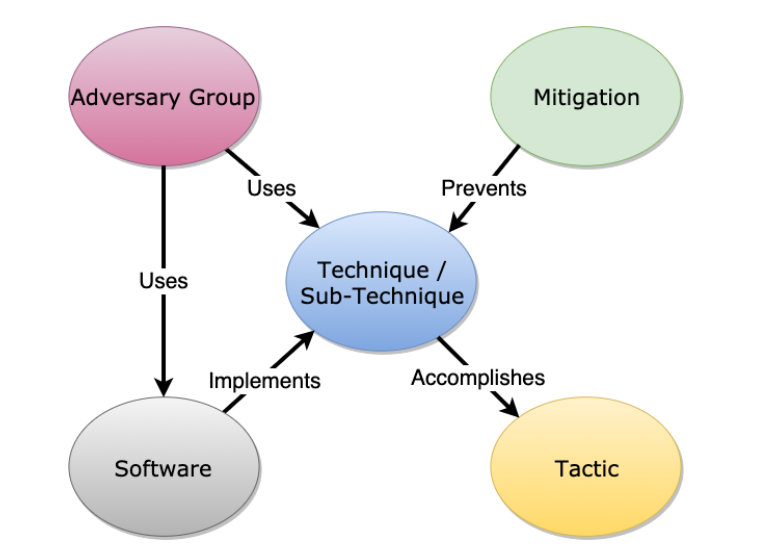

关于ATT&CK
ATT&CK简介
ATT&CK的全称是 Adversarial Tactics, Techniques, and Common Knowledge(对抗战术、技术和常识)。由MITRE公司于2013年首次提出，该公司一直以来都在为美国政府及军方服务，其中包括**CVE(Common Vulnerabilities & Exposures)**。
MITRE ATT&CK® is a globally-accessible knowledge base of adversary tactics and techniques based on real-world observations.
The ATT&CK knowledge base is used as a foundation for the development of specific threat models and methodologies in the private sector, in government, and in the cybersecurity product and service community.
从官方的描述可以看出，ATT&CK定位是一个关于对抗战术和技术的知识库，是开发特定威胁模型和方法论的基础。
ATT&CK分为三个技术域，即 Enterprise(用于传统企业网络和云技术)、Mobile(用于移动通信设备)、ICS(用于工业控制系统)。

其中Enterprise应用最为广泛，也是研究人员的重点研究方向，本次也是主要就ATT&CK for Enterprise进行学习。
TTPs
ATT&CK是一个基于黑客攻击实战结果建立的网络攻击战术和技术的知识体系，它描述了网络攻击的行为模型，反映出整个攻击周期的各个阶段。它包含三个基础元素，战术、技术和过程，即Tactics, Techniques and Procedures(TTPs)。
有的地方认为Procedures可以翻译为程序，但是根据痛苦金字塔(The Pyramid of Pain)模型，在模型第二层就已经出现了Tools。https://attack.mitre.org/resources/faq/ 也很清楚的解释了什么是Procedures*

可以说，TTPs 就是指攻击者从踩点到数据泄漏以及两者间的每一步是“如何”完成任务的。
ATT&CK就是有效分析攻击者行为（也即TTPs）的威胁分析技术。ATT&CK框架核心就是以矩阵形式展现的TTPs。
ATT&CK Matrix for Enterprise

横轴代表的是战术（Tactics），包括战术14个，即侦察、资源开发、初始访问、执行、持久化、权限提升、防御绕过、凭证获取、发现、横向移动、搜集、命令控制、数据窃取、危害。ID以TA开头，形式为TA****。https://attack.mitre.org/tactics/enterprise/
纵轴代表的是技术（Techniques），包括技术193个，ID以T开头，形式为T；子技术401个，ID以T开头，形式为T.0**。
https://attack.mitre.org/techniques/enterprise/
在每个Techniques页面都会有相应的解释，以及Procedure Examples、Mitigations、Mitigations等。
(基于ATT&CK v12)
其他ATT&CK关键对象
ATT&CK除了战术（Tactics）和技术（Techniques）两个对象外，还提出了数据源（Data Sources）、缓解措施（Mitigations ）、组织（Groups）、软件（Software）、活动（Campaigns）五个方面。
Data Sources(ID：DS****)：数据源表示可以通过传感器/日志收集的各种信息主题/主题。数据源还包括数据组件，它标识与检测给定ATT&CK技术或子技术相关的数据源的特定属性/值。
Mitigations(ID：M****)：缓解措施表示可用于防止成功执行技术或子技术的安全概念和技术类别。
Groups(ID：M****)：组织是指由安全社区跟踪的活动集群的通用名称。
Software(ID：S****)：软件是指自定义或商业代码、操作系统实用程序、开源软件的通用术语，或用于执行在 ATT&CK 中建模的行为的其他工具。
Campaigns(ID：C****)：活动是指安全社区使用各种分析方法和术语跟踪入侵活动，例如操作、入侵集和活动。
对象之间的关系如下图
ATT&CK 模型的使用
- Detections and Analytics（检测和分析）：帮助网络防御者开发分析程序，以检测对手使用的技术。
- Threat Intelligence（威胁情报）：为分析人员提供了一种通用语言来构造，比较和分析威胁情报。
- Adversary Emulation and Red Teaming（攻击模拟）：提供了一种通用语言和框架，攻击模拟团队可以使用该语言和框架来模拟特定威胁并计划其行动。
- Assessment and Engineering（评估与工程化）：可用于评估组织的能力并推动工程决策。
参考
https://attack.mitre.org/docs/ATTACK_Design_and_Philosophy_March_2020.pdf
https://attack.mitre.org/docs/enterprise-attack-v12.1/enterprise-attack-v12.1.xlsx